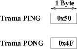
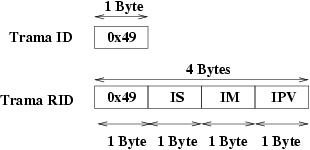

|
PROYECTO STARGATE: SERVICIOS BASICOS |
Todos las Stargates de tipo convencional implementan los servicios básicos, que son:
Servicio PING: conocer si un servidor está conectado al PC o si está funcionando. El cliente envía una trama PING y el servidor responde con una trama PONG. Ambas tramas están constituidas por un único byte

Ejemplo: Queremos hacer un ping desde el PC
Trama enviada: 0x50
Trama recibida: 0x4F
Servicio de identificación: conocer qué tipo de servidor está conectado al PC así como el micro y la tarjeta. El cliente envía la trama ID y el servidor responde con la trama RID.

La
trama de respuesta tiene 3 bytes:
IS: Código de Identificación del servidor
IM: Código de identificación del microcontrolador
IPV: Identificación de la placa y versión del servidor
Ejemplo: Queremos identificar el servidor
Trama enviada: 0x49
Trama recibida: 0x49 0x10 0x10 0x10
Se trata de un servidor nulo, que se está ejecutando en una tarjeta CT6811 con un 68hc11E2
En la siguiente tabla se muestran los códigos de identificación de los diferentes servidores. Los servidores no convencionales, como por ejemlo el de eco, también tienen asignado un código, aunque no implementen el servicio de identificación.
|
Servidor |
Código (IS) |
Descripción |
|
0x00 |
Hace eco de todo lo recibido |
|
|
0x10 |
Sólo implementa los servicios básicos |
|
|
0x20 |
Servicios básicos + servicios LOAD y STORE |
|
|
0x30 |
Servicios básicos + servicios POS (Posicionamiento) y ENA (Habilitación) |
|
|
0x40 |
Servicios básicos + servicios para grabación de los PICs |
En la siguiente tabla se muestran los códigos de identificación del microcontrolador:
|
Código (IM) |
Microcontrolador |
|
0x00 |
Reservado |
|
0x10 |
68HC11E2 |
|
0x20 |
68HC08 |
|
0x30 |
PIC16F876 |
El byte IPV se divide en dos partes
de 4 bits. Los 4 bits más significativos identifican la placa
sobre la que se está funcionando el microcontrolador. Un mismo
micro puede estar en diferentes tarjetas. Por ejemplo el 6811 puede
estar en una CT6811 o en una construida por el propio usuario.
Los
4 bits de identificación de la placa se usan junto con el
campo IM para determinar el hardware donde se ejecuta el servidor:
|
IM + 4 bits mayor peso de IPV |
Tarjeta |
|
XX0 |
Tarjeta diseñada por el usuario, que usa el micro de código XX |
|
0x101 |
Tarjeta CT6811, con un 6811E2 |
|
0x201 |
Tarjeta GP-BOT, con un 6808 |
|
0x300 |
Tarjeta construida por el usuario, con un PIC16F876 |
|
0x301 |
Tarjeta SKYPIC, con un PIC16F876 |
Los 4 bits menos significativos del byte IPV especifican la versión del servidor, o permite diferenciar servidores que ofrecen el mismo servicio pero con algunas particularidades diferentes. Normalmente tendrá el valor 0.
Tarjeta SKYPIC: Tarjeta entrenadora para los Microcontroladores PIC de 28 pines
Tarjeta CT6811 :Tarjeta entrenadora para el microcontrolador 68HC11
Tarjeta GP-BOT :Tarjeta entrenadora para el microcontrolador 68HC08
9/Jul/2004: Añadida la tarjeta SKYPIC. Tiene asignado el código 301
21/Mar/2003: Publicados los servicios básicos